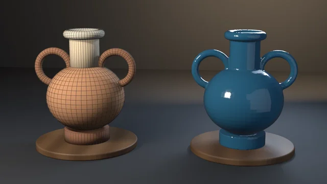
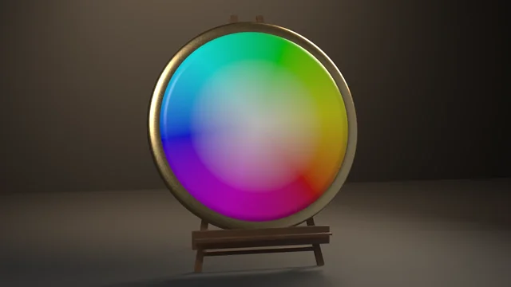

Swatch Grid
Procedural Principled materials — metal and dielectric, the emission pattern, and the cross-version set_specular shim.
examples/shader-node-group/
One reusable shader group declared via tree.interface.new_socket, instanced in five materials with different Tint values — one dipped-glaze group, five stoneware mugs, five colors.
Rendered headless by the example itself. Select it to enlarge.
tags materials node-groups
blender --background --python examples/shader-node-group/shader_node_group.py --
A runnable example that declares a reusable DippedGlaze shader group through tree.interface.new_socket — the 4.x/5.x API that replaced tree.inputs/tree.outputs — and instances it in five mug materials with different parameters, following procedural-materials-and-shaders and the shader-node-group snippet.
What it witnesses: the grouping contract. Sockets declared on the interface appear on every group-node instance; all five materials share ONE group datablock (users == 5); and the per-material Tint lives on the group node, not inside the group — set it inside the tree and every mug changes at once.
The render is the proof. The group is a dipped stoneware glaze: bare buff clay at the foot, a wavy dip line, iron speckle through clay and glaze alike, and a glaze that breaks back toward clay over the rim. All of that lives inside the group, so the five mugs — a warm-to-cool lineup of oxblood, amber, celadon, teal and cobalt — carry the same foot band, the same dip line, the same speckle field and the same rim break. Only the instance-level Tint differs. If Tint were baked into the group, the lineup would be one colour; if each material built its own tree, the shared character would be a copy rather than one datablock (the check's users gate).
A staggered shop-display lineup on the dark house stage: the odd mugs stand on a low walnut riser behind the even ones, so five mugs fill the frame without shrinking to a thin strip. Handles all turn the same way so the only thing that changes along the row is colour. The still renders under the Standard view transform (AgX would wash the five tints toward pastel); the key's spread is narrowed so it lights the mugs, not the back wall, and a warm wedge sits between the riser and the wall. Render path only.
# Cheap correctness check (no render) — the CI check:
blender --background --python shader_node_group.py --
# Falsifier: identical instance Tints. Must exit non-zero.
blender --background --python shader_node_group.py -- --same-tint
# Also render a still (EEVEE on a GPU host; use --engine cycles on GPU-less hosts):
blender --background --python shader_node_group.py -- --output mugs.png
blender --background --python shader_node_group.py -- --output mugs.png --engine cyclesPer-script sequential checks. 9 is a valid check code; there is no rule against it. 10 is the shared framing helper.
| Code | Meaning |
|---|---|
| 0 | Success |
| 1 | Uncaught exception (FATAL wrapper) |
| 2 | argparse / usage |
| 3 | Interface sockets missing Tint / Roughness / Shader |
| 4 | Group datablock users ≠ number of mug materials (5) |
| 5 | Instance points at a different node tree |
| 6 | Instance Tint values not pairwise distinct (--same-tint lands here) |
| 7 | --output produced no file |
| 10 | Gallery framing violation |
The blender-smoke workflow runs the check on Blender 5.2 LTS and 4.5 LTS (5.1 on the weekly cron, the needs-5.1 PR label, or manual dispatch). Smoke does not pass --output or --same-tint.
"""One shader node group, five materials — a runnable example. Witnesses the node-group socket workflow from procedural-materials-and-shaders: group sockets are declared through `tree.interface.new_socket` (the 4.x/5.x API that replaced `tree.inputs`/`tree.outputs`), and per-material parameters live on the GROUP NODE instance, not inside the group. The subject is a glaze library: one `DippedGlaze` stoneware shader group — bare buff clay at the foot, a wavy dip line, iron speckle, a glaze that breaks back toward clay at the rim — instanced in five mug materials. Only the instance-level Tint differs, so the five mugs carry an identical foot band, dip line, speckle field and rim break in five colours. If the Tint lived inside the group every mug would be the same colour; if each material built its own tree the shared character would be a copy, not one datablock. The check asserts the interface carries the declared sockets, every material shares the same group datablock (users == number of mugs), each instance points at that tree, and the instance-level Tint values are pairwise distinct — the whole point of grouping. ``--same-tint`` copies the first mug's Tint onto every instance and still asserts the values differ. That is the falsifier (``--same-axis`` in export-preset-axis). By default it runs only the correctness check (no render) — the CI smoke check. Pass --output to also render a still: blender --background --python shader_node_group.py -- # check only blender --background --python shader_node_group.py -- --same-tint # must fail blender --background --python shader_node_group.py -- --output m.png # + render """ import bpy, bmesh, sys, os, math, argparse from mathutils import Vector # Shared Layer 1 framing measurement (render path only) — see gallery_framing.py sys.path.insert(0, os.path.join(os.path.dirname(os.path.abspath(__file__)), os.pardir)) sys.dont_write_bytecode = True # keep examples/__pycache__ out of the repo tree import gallery_framing # One glaze library, five tints, ordered as a warm-to-cool progression. TINTS = { "Mug.Oxblood": (0.42, 0.035, 0.03, 1.0), "Mug.Amber": (0.62, 0.26, 0.025, 1.0), "Mug.Celadon": (0.16, 0.34, 0.16, 1.0), "Mug.Teal": (0.015, 0.26, 0.28, 1.0), "Mug.Cobalt": (0.03, 0.08, 0.40, 1.0), } RISER_H, RISER_Y = 0.34, 0.62 # display riser the back-row mugs stand on CLAY = (0.50, 0.37, 0.24, 1.0) # buff stoneware body IRON = (0.07, 0.04, 0.025, 1.0) # iron speckle def build_group(): """A reusable 'DippedGlaze' shader group: Tint + Roughness in, Shader out. Everything that makes the glaze a glaze — the unglazed foot, the wavy dip line, the iron speckle, the rim break — lives INSIDE the group, so every instance shares it. Only Tint and Roughness are exposed per instance. """ tree = bpy.data.node_groups.new("DippedGlaze", 'ShaderNodeTree') tree.interface.new_socket(name="Tint", in_out='INPUT', socket_type='NodeSocketColor') rough = tree.interface.new_socket(name="Roughness", in_out='INPUT', socket_type='NodeSocketFloat') rough.default_value = 0.12 tree.interface.new_socket(name="Shader", in_out='OUTPUT', socket_type='NodeSocketShader') N, L = tree.nodes, tree.links gi = N.new('NodeGroupInput') go = N.new('NodeGroupOutput') coord = N.new('ShaderNodeTexCoord') sep = N.new('ShaderNodeSeparateXYZ') L.new(coord.outputs["Generated"], sep.inputs[0]) # wavy dip line: glaze covers Generated Z above ~0.2, wobbled by noise wobble = N.new('ShaderNodeTexNoise') wobble.inputs["Scale"].default_value = 2.2 wobble.inputs["Detail"].default_value = 1.0 L.new(coord.outputs["Object"], wobble.inputs["Vector"]) wob_s = N.new('ShaderNodeMath'); wob_s.operation = 'MULTIPLY_ADD' L.new(wobble.outputs["Fac"], wob_s.inputs[0]) wob_s.inputs[1].default_value = 0.16 wob_s.inputs[2].default_value = 0.13 # line sits at z ~0.21 +- 0.04 dip = N.new('ShaderNodeMapRange') dip.interpolation_type = 'SMOOTHSTEP' zline = N.new('ShaderNodeMath'); zline.operation = 'SUBTRACT' L.new(sep.outputs["Z"], zline.inputs[0]) L.new(wob_s.outputs[0], zline.inputs[1]) L.new(zline.outputs[0], dip.inputs["Value"]) dip.inputs["From Min"].default_value = -0.004 dip.inputs["From Max"].default_value = 0.006 # glaze mask 0 (clay) .. 1 (glaze) # rim break: glaze thins toward clay over the lip brk = N.new('ShaderNodeMapRange') brk.interpolation_type = 'SMOOTHSTEP' L.new(sep.outputs["Z"], brk.inputs["Value"]) brk.inputs["From Min"].default_value = 0.90 brk.inputs["From Max"].default_value = 0.985 brk.inputs["To Max"].default_value = 0.55 tint_broken = N.new('ShaderNodeMix'); tint_broken.data_type = 'RGBA' L.new(brk.outputs["Result"], tint_broken.inputs["Factor"]) L.new(gi.outputs["Tint"], tint_broken.inputs["A"]) tint_broken.inputs["B"].default_value = CLAY # glaze vs clay body = N.new('ShaderNodeMix'); body.data_type = 'RGBA' L.new(dip.outputs["Result"], body.inputs["Factor"]) body.inputs["A"].default_value = CLAY L.new(tint_broken.outputs["Result"], body.inputs["B"]) # iron speckle: small dark dots through clay and glaze alike vor = N.new('ShaderNodeTexVoronoi') vor.inputs["Scale"].default_value = 26.0 L.new(coord.outputs["Object"], vor.inputs["Vector"]) spk = N.new('ShaderNodeMapRange') L.new(vor.outputs["Distance"], spk.inputs["Value"]) spk.inputs["From Min"].default_value = 0.10 spk.inputs["From Max"].default_value = 0.06 speckled = N.new('ShaderNodeMix'); speckled.data_type = 'RGBA' L.new(spk.outputs["Result"], speckled.inputs["Factor"]) L.new(body.outputs["Result"], speckled.inputs["A"]) speckled.inputs["B"].default_value = IRON # roughness: glaze takes the instance Roughness, bare clay stays matte rmix = N.new('ShaderNodeMix'); rmix.data_type = 'FLOAT' L.new(dip.outputs["Result"], rmix.inputs["Factor"]) rmix.inputs["A"].default_value = 0.85 L.new(gi.outputs["Roughness"], rmix.inputs["B"]) bsdf = N.new('ShaderNodeBsdfPrincipled') L.new(speckled.outputs["Result"], bsdf.inputs["Base Color"]) L.new(rmix.outputs["Result"], bsdf.inputs["Roughness"]) L.new(dip.outputs["Result"], bsdf.inputs["Coat Weight"]) # glossy glaze coat bsdf.inputs["Coat Roughness"].default_value = 0.06 L.new(bsdf.outputs["BSDF"], go.inputs["Shader"]) return tree def material_from_group(name, tree, tint): """Instance the group in a fresh material; parameters set on the instance.""" mat = bpy.data.materials.new(name) mat.use_nodes = True nt = mat.node_tree nt.nodes.clear() group = nt.nodes.new('ShaderNodeGroup') group.node_tree = tree group.inputs["Tint"].default_value = tint out = nt.nodes.new('ShaderNodeOutputMaterial') nt.links.new(group.outputs["Shader"], out.inputs["Surface"]) return mat # (radius, z) lathe profile of a thrown stoneware mug, closed: foot ring, # bellied wall, rolled lip, inner wall, well floor. MUG_PROFILE = [ (0.0, 0.0), (0.30, 0.0), (0.335, 0.012), (0.35, 0.045), (0.365, 0.075), (0.40, 0.14), (0.435, 0.32), (0.445, 0.52), (0.435, 0.72), (0.425, 0.88), (0.425, 0.96), (0.418, 0.99), (0.402, 1.0), (0.386, 0.99), (0.382, 0.96), (0.388, 0.80), (0.395, 0.52), (0.380, 0.30), (0.345, 0.16), (0.28, 0.105), (0.0, 0.095), ] def _bezier(p0, p1, p2, p3, t): u = 1.0 - t return p0 * u ** 3 + p1 * 3 * u * u * t + p2 * 3 * u * t * t + p3 * t ** 3 def build_mug_mesh(name): """Lathe body plus a swept loop handle in one mesh (one Generated space).""" me = bpy.data.meshes.new(name) bm = bmesh.new() try: verts = [bm.verts.new((r, 0.0, z)) for r, z in MUG_PROFILE] edges = [bm.edges.new((verts[i], verts[i + 1])) for i in range(len(verts) - 1)] bmesh.ops.spin(bm, geom=verts + edges, cent=(0, 0, 0), axis=(0, 0, 1), angle=math.tau, steps=72, use_merge=True) bmesh.ops.remove_doubles(bm, verts=bm.verts[:], dist=1e-5) # handle: an oval section swept along a cubic C from the upper to the # lower wall, both ends buried in the body p0, p1 = Vector((0.36, 0.0, 0.80)), Vector((0.80, 0.0, 0.86)) p2, p3 = Vector((0.78, 0.0, 0.26)), Vector((0.37, 0.0, 0.30)) rings, seg = [], 14 steps = 28 for i in range(steps + 1): t = i / steps c = _bezier(p0, p1, p2, p3, t) tan = (_bezier(p0, p1, p2, p3, min(t + 0.01, 1.0)) - _bezier(p0, p1, p2, p3, max(t - 0.01, 0.0))).normalized() nrm = tan.cross(Vector((0, 1, 0))).normalized() ring = [] for k in range(seg): a = math.tau * k / seg off = nrm * (0.042 * math.cos(a)) + Vector((0, 1, 0)) * (0.075 * math.sin(a)) ring.append(bm.verts.new(c + off)) rings.append(ring) for ra, rb in zip(rings, rings[1:]): for k in range(seg): bm.faces.new((ra[k], ra[(k + 1) % seg], rb[(k + 1) % seg], rb[k])) bm.to_mesh(me) finally: bm.free() for poly in me.polygons: poly.use_smooth = True return me def build_scene(same_tint=False): bpy.ops.wm.read_factory_settings(use_empty=True) tree = build_group() objs = [] first = next(iter(TINTS.values())) n = len(TINTS) for i, (name, tint) in enumerate(TINTS.items()): me = build_mug_mesh(name) obj = bpy.data.objects.new(name, me) # a staggered shop-display lineup read left to right: even mugs on # the floor in front, odd mugs on the riser behind, handles all right u = i - (n - 1) / 2 back = i % 2 == 1 obj.location = (u * 0.98, RISER_Y if back else -0.45, RISER_H if back else 0.0) obj.rotation_euler = (0.0, 0.0, math.radians(-38)) sub = obj.modifiers.new("Smooth", 'SUBSURF') sub.levels = 1 sub.render_levels = 2 inst_tint = first if same_tint else tint me.materials.append(material_from_group(f"Glaze.{name.split('.')[1]}", tree, inst_tint)) bpy.context.collection.objects.link(obj) objs.append(obj) return tree, objs def check(tree, objs): # sockets declared through the interface API actually exist on the interface names = {(s.name, s.in_out) for s in tree.interface.items_tree if getattr(s, "item_type", "SOCKET") == 'SOCKET'} expect = {("Tint", 'INPUT'), ("Roughness", 'INPUT'), ("Shader", 'OUTPUT')} if not expect <= names: print(f"ERROR: interface sockets {names} missing {expect - names}", file=sys.stderr) return 3 # one shared group datablock, instanced by every material if tree.users != len(objs): print(f"ERROR: group users {tree.users} != {len(objs)} (not shared)", file=sys.stderr) return 4 # per-instance parameters live on the group NODE, and they all differ tints = [] for obj in objs: node = next(n for n in obj.data.materials[0].node_tree.nodes if n.type == 'GROUP') if node.node_tree is not tree: print(f"ERROR: {obj.name} instance points at a different tree", file=sys.stderr) return 5 tints.append(tuple(round(c, 3) for c in node.inputs["Tint"].default_value)) if len(set(tints)) != len(tints): print(f"ERROR: instance Tint values not pairwise distinct {tints} — parameters " "leaked into the group instead of the instance", file=sys.stderr) return 6 print(f"group={tree.name} users={tree.users} instance_tints={tints}") return 0 def eevee_engine_id(): return 'BLENDER_EEVEE' if bpy.app.version >= (5, 0, 0) else 'BLENDER_EEVEE_NEXT' def render_still(objs, path, engine): scene = bpy.context.scene floor_me = bpy.data.meshes.new("Floor") bm = bmesh.new() try: bmesh.ops.create_grid(bm, x_segments=1, y_segments=1, size=30.0) bm.to_mesh(floor_me) finally: bm.free() fmat = bpy.data.materials.new("Studio") fmat.use_nodes = True fb = fmat.node_tree.nodes["Principled BSDF"] fb.inputs["Base Color"].default_value = (0.018, 0.019, 0.022, 1.0) fb.inputs["Roughness"].default_value = 0.8 floor_me.materials.append(fmat) floor = bpy.data.objects.new("Floor", floor_me) scene.collection.objects.link(floor) wall = bpy.data.objects.new("Wall", floor_me.copy()) wall.location = (0.0, 3.2, 0.0) wall.rotation_euler = (math.radians(90), 0.0, 0.0) scene.collection.objects.link(wall) # a low dark-walnut display riser for the back row (staging, not hero) riser_me = bpy.data.meshes.new("Riser") bm = bmesh.new() try: bmesh.ops.create_cube(bm, size=1.0) bmesh.ops.scale(bm, vec=(5.4, 0.9, RISER_H), verts=bm.verts[:]) bmesh.ops.translate(bm, vec=(0.0, RISER_Y, RISER_H / 2), verts=bm.verts[:]) bmesh.ops.bevel(bm, geom=bm.edges[:], offset=0.025, segments=3, affect='EDGES', profile=0.5) bm.to_mesh(riser_me) finally: bm.free() for poly in riser_me.polygons: poly.use_smooth = True rmat = bpy.data.materials.new("Walnut") rmat.use_nodes = True rb = rmat.node_tree.nodes["Principled BSDF"] rb.inputs["Base Color"].default_value = (0.045, 0.026, 0.016, 1.0) rb.inputs["Roughness"].default_value = 0.45 riser_me.materials.append(rmat) riser = bpy.data.objects.new("Riser", riser_me) scene.collection.objects.link(riser) world = bpy.data.worlds.new("World") world.use_nodes = True world.node_tree.nodes["Background"].inputs["Color"].default_value = (0.02, 0.021, 0.025, 1.0) scene.world = world def light(name, loc, energy, size, col, rot, spread=180.0): ld = bpy.data.lights.new(name, 'AREA') ld.energy = energy; ld.size = size; ld.color = col ld.spread = math.radians(spread) ob = bpy.data.objects.new(name, ld) ob.location = loc ob.rotation_euler = tuple(math.radians(a) for a in rot) scene.collection.objects.link(ob) # a soft key so the glossy glaze mirrors a soft window, not a hard white # square; its spread is narrowed so it lights the mugs, not the back wall light("Key", (-4.0, -5.0, 6.0), 540.0, 3.0, (1.0, 0.96, 0.9), (46, 0, -35), spread=55) light("Fill", (5.5, -4.0, 2.0), 30.0, 9.0, (0.75, 0.85, 1.0), (70, 0, 52)) light("Rim", (1.8, 1.9, 3.8), 170.0, 2.5, (0.6, 0.78, 1.0), (-40, 0, -25), spread=45) # wedge: between the riser and the wall, raking a warm pool behind the mugs light("Wedge", (-0.6, 2.2, 0.7), 170.0, 4.0, (1.0, 0.76, 0.5), (105, 0, 0)) cam_data = bpy.data.cameras.new("Cam") cam_data.lens = 50.0 cam = bpy.data.objects.new("Cam", cam_data) cam.location = (0.0, -8.5, 3.15) scene.collection.objects.link(cam) aim = bpy.data.objects.new("Aim", None) aim.location = (0.0, 0.15, 0.78) scene.collection.objects.link(aim) track = cam.constraints.new('TRACK_TO') track.target = aim track.track_axis = 'TRACK_NEGATIVE_Z' track.up_axis = 'UP_Y' scene.camera = cam scene.render.engine = 'CYCLES' if engine == 'cycles' else eevee_engine_id() if engine == 'cycles': scene.cycles.samples = 48 else: try: scene.eevee.taa_render_samples = 64 except AttributeError: pass scene.render.resolution_x = 1280 scene.render.resolution_y = 720 scene.render.image_settings.file_format = 'PNG' scene.render.filepath = path # AgX would wash the five glaze tints toward pastel (docs/VISUAL-STYLE.md) scene.view_settings.view_transform = 'Standard' # Layer 1 framing gate (silhouette matte) — exit 10 on violation, before # the beauty render so a defective composition ships no artifact. fcode = gallery_framing.check_framing( scene, cam, hero=list(objs), elements=list(objs), stage=[floor, wall, riser], ) if fcode: return fcode bpy.ops.render.render(write_still=True) if not (os.path.exists(path) and os.path.getsize(path) > 0): print("ERROR: render produced no file", file=sys.stderr) return 7 return 0 def main(): argv = sys.argv[sys.argv.index("--") + 1:] if "--" in sys.argv else [] p = argparse.ArgumentParser() p.add_argument("--output", default=None, help="optional: render a still PNG here") p.add_argument("--engine", default="eevee", choices=("eevee", "cycles"), help="render engine for --output (cycles for GPU-less hosts)") p.add_argument("--same-tint", action="store_true", help="falsifier: identical instance Tints, still assert they differ") args = p.parse_args(argv) tree, objs = build_scene(same_tint=args.same_tint) code = check(tree, objs) if code: return code if args.output: rcode = render_still(objs, os.path.abspath(args.output), args.engine) if rcode: return rcode print(f"rendered still {args.output}") print("shader-node-group OK") return 0 if __name__ == "__main__": try: sys.exit(main()) except Exception as e: import traceback; traceback.print_exc(); print(f"FATAL: {e}", file=sys.stderr); sys.exit(1)
Procedural Principled materials — metal and dielectric, the emission pattern, and the cross-version set_specular shim.

A Geometry Nodes SDF remesh (MeshToSDFGrid → GridToMesh at the SDF zero-level), with a Set Material node carrying the material through the remesh.

The modern color-attributes API — mesh.color_attributes.new() on the CORNER domain, filled by expanding per-vertex HSV across face corners with foreach_get/foreach_set, then wired into a shader Attribute node.